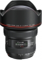

器材库 > 35mm画幅AF变焦镜头 > EF 11-24/4L USM

详细规格
镜头类型
超广角变焦镜头
发布日期
2015-02-06
厂家推荐价格
2,999.00 （美元）
焦距
11mm-24mm
最大光圈
f/4
最小光圈
f/22
镜头结构
16片/11组
非球面镜片
4片
光圈叶片
9片
最近对焦距离
28cm
最大放大倍率
0.16倍
驱动马达
USM（超声波马达）
镜头卡口
Canon EF
防抖
否
颜色
黑色
尺寸
108×132mm
重量
1180g
备注
镜头后端插入式滤镜
痴者入局2016-07-12 22:114.75 分
操作性 5.00耐用性 4.50性价比 4.00解像力 5.00色彩还原 5.00机械结构 5.00
thambar2015-09-28 17:505 分
操作性 5.00耐用性 5.00性价比 5.00解像力 5.00色彩还原 5.00机械结构 5.00
花心儿2015-08-23 15:315 分
操作性 5.00耐用性 5.00性价比 5.00解像力 5.00色彩还原 5.00机械结构 5.00
wmf1132015-07-19 15:374.83 分
操作性 5.00耐用性 5.00性价比 4.00解像力 5.00色彩还原 5.00机械结构 5.00
大嘴鳄2015-07-08 00:400.5 分
操作性 0.50耐用性 0.50性价比 0.50解像力 0.50色彩还原 0.50机械结构 0.50
公摄摄员2015-05-14 10:18
屹潇忆秦2015-05-13 23:525 分
操作性 5.00耐用性 5.00性价比 5.00解像力 5.00色彩还原 5.00机械结构 5.00
青春飞扬19712015-03-17 09:054.92 分
操作性 5.00耐用性 5.00性价比 4.50解像力 5.00色彩还原 5.00机械结构 5.00
哈斯2015-03-09 00:344.5 分
操作性 4.50耐用性 4.50性价比 3.50解像力 5.00色彩还原 5.00机械结构 4.50
北方郎2015-02-24 11:515 分
操作性 5.00耐用性 5.00性价比 5.00解像力 5.00色彩还原 5.00机械结构 5.00
各种浪2015-02-19 17:415 分
操作性 5.00耐用性 5.00性价比 5.00解像力 5.00色彩还原 5.00机械结构 5.00
cybertron2015-02-18 20:185 分
操作性 5.00耐用性 5.00性价比 5.00解像力 5.00色彩还原 5.00机械结构 5.00
elliotliu2015-02-17 18:075 分
操作性 5.00耐用性 5.00性价比 5.00解像力 5.00色彩还原 5.00机械结构 5.00
深拓澜2015-02-12 06:260.5 分
操作性 0.50耐用性 0.50性价比 0.50解像力 0.50色彩还原 0.50机械结构 0.50
产品图 / 样片
评测 / 相关文章
- 详细内容 （存档）
- 岂止于广 佳能EF11-24mm F4L详尽评测 （存档）
- ［试用］L级最广镜头 EF 11-24/4L USM外观实拍 （存档）
- ［资讯］火力全开 佳能全线反攻打响 （存档）
- ［资讯］佳能EF 11-24/4L USM官方样片欣赏 （存档）
相关文章
- ［试用］岂止于广 佳能EF11-24mm F4L详尽评测 （存档）
- ［试用］L级最广镜头 EF 11-24/4L USM外观实拍 （存档）
- ［资讯］火力全开 佳能全线反攻打响 （存档）
- ［资讯］佳能发布EF 11-24mm f/4L USM镜头 （存档）
- ［资讯］佳能EF 11-24/4L USM官方样片欣赏 （存档）
- ［试用］变焦来袭 定焦练习本迎来EF11-24 （原站已下线）
- ［资讯］EOS大咖秀：中性灰聊佳能牛镜 （原站已下线）
- ［试用］EOS印象东南亚 （原站已下线）
- ［行情］老婆给了五万块 购买器材真叫爽 （存档）